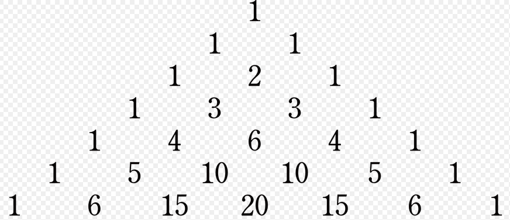

3.3 Intro Lists¶
Run de volgende cel:
List.range 1 9
[1,2,3,4,5,6,7,8,9]
: List Int
Hee, hoe komt dat? Blijkbaar wordt er een ‘lijstje’ (List) van getallen opgebouwd.
3.3.1 Lijsten creëren¶
Een andere manier om een List te creëren is:
[ 3 , 5 , 6 , 8 ]
[3,5,6,8] : List number
ofwel het simpelweg opsommen wat er in moet komen. Voorbeeld met woorden/strings er in:
[ "abra" , "ca" , "dabra" ]
["abra","ca","dabra"] : List String
Je ziet bij die 2 voorbeelden in het resultaat wat het type van de elementen is. Wat als we strings en ints mixen?
[ "abra" , 5 , "dabra" ]
-- TYPE MISMATCH ---------------------------------------------------------- REPL
The 2nd element of this list does not match all the previous elements:
3| [ "abra" , 5 , "dabra" ]
^
The 2nd element is a number of type:
number
But all the previous elements in the list are:
String
Hint: Everything in a list must be the same type of value. This way, we never
run into unexpected values partway through a List.map, List.foldl, etc. Read
<https://elm-lang.org/0.19.1/custom-types> to learn how to “mix” types.
Hint: Try using String.fromInt to convert it to a string?
Zoals je ziet vereist Elm dat de elementen van een lijst van hetzelfde type zijn.
Een bijzondere versie van het opsommen van de elementen is de lege List: een List zonder elementen. Dat doe je zo (eigenlijk ook op de ‘opsom-manier’, door 0 elementen op te sommen):
[]
[] : List a
Dat lijkt misschien niet zo bijzonder maar een lege lijst is bij het werken met lijsten net zo belangrijk als de getallen 0 en 1 bij optellen en vermenigvuldigen. Ook kun je aan een bestaande List met behulp van :: een element toevoegen:
42 :: (List.range 1 9)
[42,1,2,3,4,5,6,7,8,9]
: List Int
en ook meerdere elementen toevoegen kan:
83 :: 42 :: (List.range 1 9)
[83,42,1,2,3,4,5,6,7,8,9]
: List Int
Zoals je ziet zijn haakjes hier niet nodig. Op deze manier kun je een bestaande List verlengen.
Om van een List het eerste element te krijgen bestaat de functie head:
List.head (83 :: 42 :: (List.range 1 9))
Just 83 : Maybe Int
‘Maybe’? Ja, want misschien was de List wel leeg en dan wordt er geen Int teruggegeven. Maybe is het een goed idee zelf op internet nog wat informatie op te zoeken, gebruik bijvoorbeeld de keywords ‘elm lang List maybe’.
Nog een voorbeeld van Head:
List.head ([ "abra" , "ca" , "dabra" ])
Just "abra" : Maybe String
Ook is het mogelijk juist allesbehalve het eerste element op te vragen: de ‘tail’:
List.tail (83 :: 42 :: (List.range 1 9))
Just [42,1,2,3,4,5,6,7,8,9]
: Maybe (List Int)
List.tail ([ "abra" , "ca" , "dabra" ])
Just ["ca","dabra"] : Maybe (List String)
Als je er even over nadenkt zie je wellicht dat een List in essentie 2 verschillende vormen kan hebben: het is óf een lege List óf het is een element (‘head’ genaamd) gevolgd door een List (die ook weer leeg kan zijn óf bestaat uit een head en een List (de tail, die ook weer leeg kan zijn óf … enzovoort)).
En tel er 2 bij op…
Het leuke van Lists is dat je er berekeningen op kunt gaan toepassen. Stel we willen bij elk getal in de List het getal 2 optellen. We mappen dan de functie telTweeOpBij op elk getal uit de List: Met mappen wordt bedoeld: Het toepassen van de functie op elk van de items in de lijst. (De functie telTweeOpBij hebben we eerder gezien, maar hier opnieuw):
telTweeOpBij x = x + 2
<function> : number -> number
Deze functie kunnen we dus toepassen op elk element uit een List:
List.map telTweeOpBij (List.range 1 9)
[3,4,5,6,7,8,9,10,11]
: List Int
We hadden in plaats van telTweeOpBij ook kunnen schrijven
List.map ( \x -> x + 2 ) (List.range 1 9)
[3,4,5,6,7,8,9,10,11]
: List Int
waarbij \x -> x + 2 een anonymous function is zoals we al eerder gezien hebben.
Nu is:
List.map ( \x -> x + 2 ) (List.range 1 9)
niet bepaald super-leesbaar. Je mag dit in Elm ook anders opschrijven: Neem (List.range 1 9) en map op elk element de functie ( x -> x + 2 ). Dit ziet er dan in de Elm Repl uit als:
(List.range 1 9) |> List.map ( \x -> x + 2 )
[3,4,5,6,7,8,9,10,11]
: List Int
3.3.2 List.map functie¶
Met behulp van de map (List.map) kunnen we dus een functie toepassen op elk element van een List.
List.map eenFunctie eenList
De functie eenFunctie wordt toegepast op eenList en het resultaat is een List met evenveel elementen als eenList. Het i-de element van het resultaat is het resutaat van toepassing van functie eenFunctie op de list eenList. Stel ik wil alle kwadraten van de getallen 1 tot en met 30:
List.map ( \x -> x * x ) ( List.range 1 30 )
[1,4,9,16,25,36,49,64,81,100,121,144,169,196,225,256,289,324,361,400,441,484,529,576,625,676,729,784,841,900]
: List Int
3.3.3 List.filter¶
De filter-functie (voluit: ’List.filter’) neemt als input een list en de output is een lijst met (alleen die) elementen uit de input die aan een voorwaarde voldoen. De voorwaarde wordt gesteld door een andere functie die (losgelaten op een element van de list) true of false teruggeeft.
Zo geeft de functie \x -> x > 5 als resultaat true als de input groter is dan 5 en anders
false. Kijken we naar:
List.filter ( \x -> x > 5) (List.range 1 30)
[6,7,8,9,10,11,12,13,14,15,16,17,18,19,20,21,22,23,24,25,26,27,28,29,30]
: List Int
dan wordt er dus een list opgebouwd uit die elementen uit de range 1 tot en met 30 die groter zijn dan 5.
** Een uitdaging: Even, Oneven en Deling**
Een voorbeeld: stel we willen alle oneven getallen van 1 tot 1000 opsommen. Een manier om dit te doen is de list te nemen van getallen van 1 tot 1000 en dan te filteren of een getal even of oneven is.
Om te kijken of een getal even of oneven is delen we het door 2 (deling van gehele getallen, dat wil zeggen geen komma-getallen).
In de informatica bestaan er 2 soorten deling: de gewone deling zoals je deze meestal tegenkomt (met breuken of kommagetallen; alsof je pizza’s verdeelt) en de integer deling (alleen gehele getallen; alsof je snoepjes verdeelt):
Als je 13 pizza’s verdeelt over 3 mensen (zullen wel kleine pizzaatjes zijn…) krijgt ieder 4 (hele) pizza’s en ook nog 1/3 pizza. In Elm heet dit een floating point division en je gebruikt er de deelstreep / voor: 13 / 3.
Als je daarentegen 13 snoepjes hebt en ze over 3 mensen eerlijk verdeelt krijgt ieder 4 snoepjes en heb je als het goed is nog 1 snoepje over (de rest, ook wel modulo genoemd). In Elm heet dit een integer division. Hoeveel snoepjes elk heeft kun je berekenen met 13 // 3 en hoeveel snoepjes er overblijven bereken je met modBy 13 3.
Om te weten of een getal even is (deelbaar door 2) of oneven is kun je een integer deling door 2 doen en kijken of er 0 uitkomt, in elm:
\x -> ( modBy x 2 == 0 )
Als we deze functie toepassen op een oneven getal moet er False uitkomen en anders True:
( \x -> ( modBy x 2 == 0 ) ) 15
False : Bool
( \x -> ( modBy x 2 == 0 ) ) 14
False : Bool
Voor het uitproberen van dit stukje code is dit een prima manier om te noteren, maar voor de leesbaarheid (en dus onderhoudbaarheid) van een programma is het goed er een duidelijke naam aan te geven (dus in plaats van de anonymous functie gaan we nu een named function programmeren):
isEven x = modBy x 2 == 0
<function> : Int -> Bool
Waarna we het wat cryptische (\x -> ( modBy x 2 == 0 )) 15 van hierboven kunnen versimpelen tot:
isEven 15
False : Bool
Om het helemaal af te maken definiëren we ook nog een function om te kijken of een getal oneven (odd in het Engels) is. Er zijn 2 voor de hand liggende manieren: je zou bijvoorbeeld kunnen kijken of een integer deling door 2 juist 1 oplevert, dus iets als isOdd x = ( x % 2 == 1 ), maar eleganter is misschien wel door function isOdd te definiëren als:
isOdd x = not ( isEven x )
<function> : Int -> Bool
ofwel: kijk of het getal even is en zet er not voor (not True geeft False, not False geeft True).
Kijk of 15 een oneven getal is:
isOdd 15
True : Bool
en 42? en 83? Komt eruit wat je verwacht?
Terug naar de uitdaging: We wilden alle oneven getallen van 1 tot 1000 opsommen. We laten nu alle getallen van 1 tot 1000 opsommen en gebruiken dan List.filter om de even getallen er uit te filteren zodat alleen de oneven getallen overblijven:
List.filter isOdd ( List.range 1 1000 )
Probeer zelf:
Hoe krijg ik met behulp van List.map en/of List.filter van de getallen van 1 tot en met 60 die kwadraten die groter zijn dan 28?
3.3.4 List.foldl¶
Na de map en filter, die vrij intuïtief zijn als je ze een keer gezien hebt, komen we bij de ’fold’. Deze komt voor als ’foldl’ en ’foldr’, misschien kun je al vermoeden waar ’l’ en ’r’ voor staan?
We beginnen met een voorbeeld: Stel we willen weten hoeveel de getallen van 1 tot en met 100 bij elkaar opgeteld zijn, dus
1 + 2 + 3 + 4 + 5 + … + 99 + 100
Denk hier eerst een minuutje over na voor je verder leest. Als je wilt kun je het hier uitproberen:
We hebben al gezien dat we met (List.range 1 100) (een list met) de getallen 1 tot en met 100 krijgen. Hoe krijgen we alle elementen uit de list opgeteld? We doorlopen de lijst: elk element wordt bij het tussenresultaat opgeteld. Dit lijkt wat op map, omdat op elk element van de list een berekening wordt uitgevoerd, echter wordt de uitvoer/resultaat van de ene berekening gebruikt als invoer voor de volgende berekening. Die berekening wordt geformuleerd als een functie:
\x -> (\y -> x+y)
<function> : number -> number -> number
Aj, dat ziet er lastig uit…!? Valt mee als we het stapje voor stapje bekijken. Het is een functie die als input een ’x’ verwacht. Dat is het element van de list. Bij de eerste aanroep is dat dus 1, 2e aanroep een 2, 3e aanroep een 3 en zo door. Deze functie geeft een andere functie terug:
( \y -> x+y )
een functie die een ’y’ ontvangt (het tussenresultaat, de optelling tot nu toe) en een nieuw tussenresultaat berekent: in dit geval door bij het vorige tussenresultaat de waarde van het huidige list-element op te tellen. Elm zorgt ervoor dat het nieuwe tussenresultaat bij het volgende list-element gebruikt wordt zodat we op het einde van de list alle elementen opgeteld hebben!
We zijn er bijna! We moeten namelijk nog aangeven dat we bij het eerste element willen beginnen met tussenresultaat 0!
Als we dit samenvoegen krijgen we:
List.foldl ( \x -> (\y -> x + y )) 0 (List.range 1 100)
5050 : Int
Je ziet dat ’foldl’ als eerste parameter de ’berekeningsfunctie’ ontvangt, als tweede de initiële waarde en tot slot de list waarop de berekening moet worden toegepast.
We kunnen een functie ’telAllesOp’ definiëren die een list accepteert en alle waarden optelt:
telAllesOp = List.foldl ( \x -> (\y -> x + y )) 0
<function> : List number -> number
Het is daarna mogelijk om van een list alle elementen op te tellen met
telAllesOp [42,512,4096]
4650 : number
Uitdaging¶
Definieer nu zelf aan de hand van het voorafgaande met behulp van folding een functie die alle elementen van een list kwadrateert en die kwadraten dan bij elkaar optelt. Test deze met de korte lijsten [3,4] en [5,12] (doen die je ergens aan denken? misschien als je goed naar de resultaten kijkt: 25 en 169).
Definieer hier je functie:
en test deze met [3,4] en [5,12]:
3.3.5 List.foldr¶
Je had wellicht al bedacht dat ’l’ en ’r’ voor links en rechts staan. Als je het in eerdergebruikt voorbeeld ’foldl’ vervangt door ’foldr’:
List.foldr ( \x -> (\y -> x + y )) 0 (List.range 1 100)
5050 : Int
Krijg je dan een ander resultaat? Snap je waarom?
Vergelijk ook de twee regels:
List.foldr ( \x -> (\y -> x ++ y )) "X" [ "a", "b", "c" ]
"abcX" : String
List.foldl ( \x -> (\y -> x ++ y )) "X" [ "a", "b", "c" ]
"cbaX" : String
Hier is het verschil heel duidelijk te zien.
Mogelijke challenge: Binomium¶
Misschien heb je wel eens gehoord van het binomium van Newton:

Het begint met het getal 1, daaronder komen rijen met steeds links én rechts een 1. De andere getallen zijn steeds de 2 getallen er schuin boven opgeteld. Misschien heb je wel eens een knikkerbaan gezien met spijkertjes hetzelfde patroon:
Het getal dat in het binomium staat is gelijk aan het aantal ’wegen’ dat naar een spijkertje leidt: een knikker die er van bovenaf in rolt kan steeds links of rechts af. Het is bijvoorbeeld op 4 manieren mogelijk om bij een plek te komen waar een 4 staat.
Van aantal wegen is het een redelijk kleine stap naar de ‘kans’ dat de knikker op een bepaalde plek terecht komt. De getallen komen op veel plekken terug.
Het is best wel een challenge/uitdaging om een functie te schrijven die de i-de regel van het binomium oplevert!